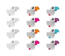

Introduction
Last updated on 2024-07-02 | Edit this page
Overview
Questions
- What are computational workflows, and why are they useful?
- What is Common Workflow Language?
- How are CWL workflows written?
- How do CWL workflows compare to shell workflows?
- What are the advantages of using CWL workflows?
Objectives
- Understand why you might use CWL instead of a shell script
- Recognise the advantages of using a computational workflow
Computational Workflows
A computational workflow is a formalised chain of software tools, which explicitly defines how data is input, how it flows between tools and how it is output. Computational workflows are widely used for data analysis and enable rapid innovation and decision making.
The most important benefit of computational workflows is that they require a user to write down, fully formalise and automate their dataflow and process. While this can be a challenge, it allows greater repeatability, shareability and robustness to be achieved.
Below is an image showing a graphical representation of a dummy workflow. You can see inputs being made on the left, data flowing and being processed by tools and passed to the output.
While you can imagine creating shell scripts (Bash or Make) to meet this need, using a formal workflow language (such as CWL) brings several further benefits such as introducing abstraction and improved scalability and portability. We will discuss some of these benefits here.
Computational workflows explicitly create a divide between a user’s dataflow and the computational details which underpin the chain of tools, placing these elements in separate files. The dataflow is described by the workflow, where tools are described at a high level. The tools implementation is specified by tool descriptors where the full complexity of a tools usage is handled. The image below shows how tool descriptors underpin workflow steps and hide complexity.
This abstraction allows the use of heterogeneous tools, potentially shared by third parties, and allows workflow users to connect and utilise a wide range of tools and techniques without the need for significant computational experience. An example of the strength of this approach is the ability for workflows to use (e.g. Docker) containers “under the hood” without the user needing to install, download or learn any further technologies.
By adapting tool descriptors to multiple platforms, this abstraction allows the same workflow to be used on different platforms, transparently to the workflow user. This means users can move between local development and cloud and HPC solutions seamlessly.
Benefits of Computational Workflows
In summary, computational workflows bring many benefits and an ideal computational workflow adopts and provides the properties below:
Handy Properties of Computational Workflows1
 |
Composition & Abstraction | Using the best code written by 3rd parties Handle heterogeneity Shield Complexity & incompatibility Shareable reusable, re-mixable methods |
|  | Sharing & Adaptability | Shared method, publishable know-how BYOD / parameters Different implementations Changes in execution infrastructure |
 |
Automation | Repetitive reproducible pipelines Simulation sweeps Manage data and control flow Optimised monitoring & recovery Automated deployment |
 |
Reporting & Accreditation | Provenance logging & data
lineage Auto-documentation Result comparison |
| Scalability & Infrastructure Access | Accessing infrastructures, datasets and tools Optimised computation and data handling Parallelisation Secure sensitive data access & management Interoperating datasets & permission handling |
|
 |
Portability | Dependency handling Containerisation & packaging Moving between on premise & cloud |
Computational Workflow Managers
Computational workflow managers further extend this abstraction, providing high level tools for managing data and tools, aiming to help users to design and run computational workflows more easily. A computational workflow engine provides an interface for launching workflows, specifying and handling inputs and collecting and exporting outputs, they can also help users by storing completed steps of workflows, allowing workflows to be resumed part way, or rerun with minimal changes.
Further, computational workflow managers aid users with the automation, monitoring and provenance tracking of the dataflow. They may also help users to produce and understand reports and outputs from their workflow.
Why a standard for workflows is needed?
The rise in popularity of workflows has been matched by a rise in the number of disparate workflow managers that are available, each with their own syntax or methods for describing the tools and workflows, reducing portability and interoperability of these workflows. For a comprehensive lists of all known computational workflow systems, see Computational Data Analysis Workflow Systems maintained by the CWL community. The Common Workflow Language CWL standard has been developed to address these problems, and to serve as a open standard for describing how to run commandline tools and connect them to create workflows.
Common Workflow Language
CWL is a free and open standard for describing command-line tool based workflows2.
CWL provides a common, but reduced, set of abstractions that are both used in practice and implemented in many popular workflow managers. The CWL language is declarative, enabling computational workflows to be constructed from diverse software tools, executing each through their command-line interface.
Shell scripts reduce portability
Previously researchers might write shell scripts to link together these command-line tools. Although these scripts might provide a direct means of accessing the tools, writing and maintaining them requires specific knowledge of the system that they will be used on. Shell scripts are not easily portable, and so researchers can easily end up spending more time maintaining the scripts than carrying out their research. The aim of CWL is to reduce that barrier of usage of these tools to researchers.
CWL workflows are written in a subset of YAML, with a syntax that does not restrict the amount of detail provided for a tool or workflow. The execution model is explicit, all required elements of a tool’s runtime environment must be specified by the CWL tool-description author. On top of these basic requirements they can also add hints or requirements to the tool-description, helping to guide users (and workflow engines) on what resources are needed for a tool.
Containerisation
The CWL standard explicitly support the use of software container technologies, such as docker helping ensure that the execution of tools is reproducible.
Data locations are explicitly defined, and working directories are kept separate for each tool invocation. This ensures the portability of tools and workflows, allowing the same workflows to be run on your local machine, or in a HPC or cloud environment, with minimal changes required.
RNA sequencing example
In this tutorial a bioinformatics RNA-sequencing analysis is used as an example. However, there is no specific knowledge needed for this tutorial. RNA-sequencing is a technique which examines the quantity and sequences of RNA in a sample using next-generation sequencing. The RNA reads are analyzed to quantify the relative abundance of different RNA molecules in the sample, a process known as differential gene expression analysis.
The process looks like this:

During this tutorial, the following analytical steps will be performed.
- Quality control (FASTQC)
- Adapter trimming
- Alignment (mapping)
- Counting reads associated with genes
The different tools necessary for this analysis are already available. In this tutorial a workflow will be set up to connect these tools and generate the desired output files.
References
C. Goble (2021): FAIR Computational Workflows. JOBIM Proceedings. https://www.slideshare.net/carolegoble/fair-computational-workflows-249721518↩︎
M. Wilkinson, M. Dumontier, I. Aalbersberg, et al. (2016): The FAIR Guiding Principles for scientific data management and stewardship. Scientific Data. https://doi.org/10.1038/sdata.2016.18↩︎